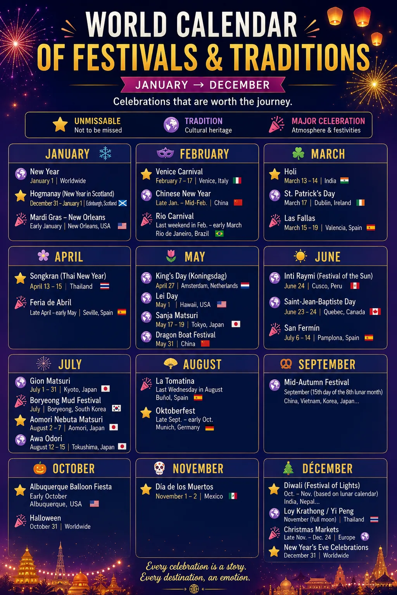
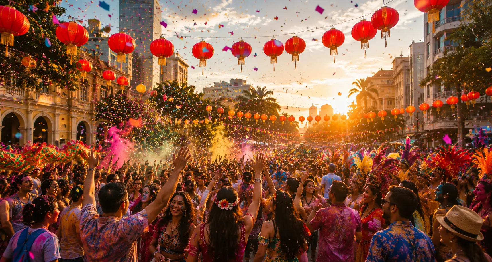

Carnivals, popular celebrations and cultural traditions: discover month by month the major events that bring the world to life and choose your next destination to the rhythm of the festivities.
📅 Last Tuesday of January
📍 Lerwick, Shetland Islands — Scotland
🔥 Torchlight processions, Viking costumes and the spectacular burning of a replica longship bring this major winter celebration to life.
💡 Up Helly Aa is one of the most impressive traditions in the Shetland Islands. The event transforms Lerwick into a huge illuminated procession and offers a unique opportunity to discover this Scottish archipelago in the heart of winter.
📅 February or March depending on the year
📍 Rio de Janeiro, Brazil
🎭 Samba school parades, spectacular costumes, music and street parties transform Rio for several days.
💡 Rio Carnival is one of the world's most famous celebrations. The Sambadrome hosts the main parades, while the city's many “blocos” bring the festivities to neighborhoods across Rio.
🌍 Discover Rio📅 February or March depending on the year
📍 Venice, Italy
🎭 Venetian masks, historic costumes and magnificent palaces create the unique atmosphere of one of the world's most elegant carnivals.
💡 St Mark's Square and the narrow streets of Venice become the setting for a huge celebration where centuries-old traditions, balls, performances and elaborate costumes transport visitors back in time.
📅 Between January and February, depending on the lunar calendar
📍 China and many cities across Asia
🏮 Lanterns, red decorations, family gatherings, dragon dances and popular celebrations mark the arrival of the Lunar New Year.
💡 From Beijing to Shanghai and Hong Kong, as well as Chinese communities around the world, this festive period offers a spectacular immersion into one of Asia's most important traditions.
📅 February or March depending on the year
📍 New Orleans, Louisiana — United States
🎺 Parades, decorated floats, marching bands, costumes and street parties take over the city during Mardi Gras season.
💡 It is one of the most iconic celebrations in the United States. The French Quarter and the major avenues of New Orleans come alive with a unique atmosphere blending local traditions, music and Creole culture.
📅 February or March, depending on the Hindu calendar
📍 India — especially Mathura, Vrindavan and Jaipur
🌈 Colored powders, music, dancing and lively gatherings celebrate the arrival of spring during one of the world's most photogenic festivals.
💡 Holi has become a major attraction for travelers, but above all it remains an important cultural and religious celebration. Cities such as Mathura and Vrindavan are particularly famous for their festivities.
📅 March 17
📍 Dublin, Ireland
☘️ Parades, traditional music, performances and streets dressed in green make Dublin one of the most iconic places to celebrate St Patrick's Day.
💡 The celebration extends far beyond Ireland, but experiencing St Patrick's Day in Dublin lets visitors enjoy the event at the heart of Irish culture, in a city that comes alive for several days.
📅 March 15–19
📍 Valencia, Spain
🔥 Huge artistic sculptures known as “fallas” take over the streets before being set ablaze during the spectacular night of La Cremà.
💡 With monumental sculptures, firecrackers, fireworks, traditional costumes and street celebrations, Las Fallas completely transforms Valencia and is one of Spain's most spectacular festivals.
📅 April 13–15
📍 Thailand — especially Bangkok and Chiang Mai
💦 Thai New Year transforms the streets into huge celebrations where water fights, traditional ceremonies and lively gatherings continue for several days.
💡 Chiang Mai is particularly famous for experiencing Songkran, while Bangkok also hosts huge celebrations. Behind the famous water fights lies a tradition symbolizing renewal and purification.
📅 April 16 – May 9, 2027
📍 Theresienwiese, Munich — Germany
🎡 Munich's famous spring festival brings beer tents, Bavarian traditions, fairground rides, music and local food to the Theresienwiese.
💡 Often described as Munich's springtime alternative to Oktoberfest, Frühlingsfest offers a more relaxed way to experience one of the city's great Bavarian celebrations.
🌷 Springfest Guide 🌍 Discover Munich📅 April or May depending on the year
📍 Seville, Spain
💃 Flamenco, traditional costumes, horses, music and casetas bring Seville to life during one of Andalusia's most iconic celebrations.
💡 For several days, the Feria district becomes a vibrant festive city of its own. It is a particularly special time to discover Andalusian culture and experience Seville's unique atmosphere.
📅 April 27
📍 Amsterdam, Netherlands
🧡 For the Dutch national celebration, Amsterdam turns orange and comes alive with concerts, markets, street parties and gatherings along the canals.
💡 King's Day is one of the liveliest days of the year in the Netherlands. Across Amsterdam, the streets and canals become the setting for a huge celebration attracting visitors from around the world.
🌍 Discover Amsterdam📅 May 1
📍 Hawaii — United States
🌺 Flower leis, Hawaiian music, hula and cultural celebrations honor one of the archipelago's most iconic traditions.
💡 Celebrated since 1928, Lei Day offers an opportunity to discover Hawaiian culture beyond the beaches. Events, demonstrations and lei-making competitions take place across several islands, particularly on Oahu.
📅 Third weekend of May
📍 Asakusa, Tokyo — Japan
🏮 Processions, traditional costumes and dozens of mikoshi, Japan's portable shrines, fill the streets around the famous Sensō-ji Temple.
💡 Sanja Matsuri is one of Tokyo's major traditional festivals. For three days, the historic Asakusa district comes alive with a spectacular atmosphere and offers visitors a chance to discover a more traditional side of the Japanese capital.
🌍 Discover Tokyo📅 May or June depending on the lunar calendar
📍 China — celebrations in many cities
🐉 Spectacular dragon boat races, drums, lively gatherings and culinary traditions bring this ancient Chinese festival to life.
💡 The races are the most spectacular part of the festival for travelers: long boats decorated like dragons compete to the rhythm of beating drums in front of crowds gathered along the riverbanks.
📅 June 24
📍 Cusco, Peru
☀️ This major Festival of the Sun brings the heritage of the Inca Empire back to life through traditional costumes, music, processions and spectacular ceremonies.
💡 The celebrations pass through several historic sites in Cusco before reaching the fortress of Sacsayhuamán. Inti Raymi has become one of Peru's major cultural events and a remarkable way to discover the country's Inca heritage.
📅 Night of June 23–24
📍 Porto, Portugal
🔥 Concerts, lively streets, popular traditions and fireworks over the Douro mark one of Porto's most festive nights of the year.
💡 The entire city joins the celebrations. One of the most unusual traditions sees people playfully tapping each other on the head with small plastic hammers before heading to the riverfront to watch the fireworks.
📅 July 6–14
📍 Pamplona, Spain
🎉 White outfits and red scarves, music, parades and street celebrations transform Pamplona for nine days.
💡 San Fermín is famous around the world for its encierros, the bull runs through the streets of the city. But the festival also features concerts, processions, fireworks and many other popular celebrations.
📅 Throughout July
📍 Kyoto, Japan
🏮 Huge traditional floats, lanterns, processions and historic neighborhoods give Kyoto an exceptional atmosphere during one of Japan's most famous festivals.
💡 The grand Yamaboko float processions are among the highlights of Gion Matsuri. On several evenings before the parades, visitors can also wander through illuminated streets and experience Kyoto's centuries-old traditions.
📅 July or early August depending on the year
📍 Boryeong, South Korea
💦 Mud pools, games, obstacle courses, music and entertainment transform Daecheon Beach into a huge playground during the Korean summer.
💡 Now one of South Korea's best-known summer events, the Boryeong Mud Festival attracts an international crowd and offers an experience very different from the country's historic traditional festivals.
🌍 Discover South Korea📅 Early August
📍 Aomori, Japan
🏮 Huge illuminated floats depicting historical and mythological figures parade through the streets to the rhythm of drums, dancing and chants.
💡 Nebuta Matsuri is one of Japan's most spectacular summer celebrations. After nightfall, the gigantic illuminated floats create a unique atmosphere and attract visitors from across Japan and around the world.
📅 Mid-August
📍 Tokushima, Japan
💃 Thousands of dancers accompanied by musicians parade through the streets to the rhythm of Awa Odori, a centuries-old Japanese tradition.
💡 The atmosphere is particularly festive, and some areas allow visitors to join the dancing. It is one of the major events of the Japanese summer and a lively way to experience the country's traditional culture.
📅 Last Wednesday of August
📍 Buñol, near Valencia — Spain
🍅 For a few hours, the streets of this small Spanish town become the setting for one of the world's most famous tomato fights.
💡 La Tomatina attracts travelers every year who come specifically to take part in this unusual celebration. Access to the tomato fight is regulated and generally requires a ticket, so it is best to plan your visit in advance.
📅 From mid-September to early October
📍 Munich, Germany
🍺 Huge beer tents, Bavarian costumes, traditional music, local specialties and fairground attractions create the atmosphere of one of the world's most famous popular festivals.
💡 Despite its name, Oktoberfest usually begins in September. Millions of visitors travel to Munich to experience this huge Bavarian celebration held on the Theresienwiese.
🌍 Discover Munich📅 September or October depending on the lunar calendar
📍 China, Hong Kong, Taiwan and several regions across Asia
🏮 Lanterns, family gatherings and mooncakes are at the heart of this major traditional celebration associated with the full moon and the harvest season.
💡 The Mid-Autumn Festival is celebrated in different forms across Asia. Illuminations and lantern displays create a particularly beautiful atmosphere for travelers.
📅 Early October
📍 Albuquerque, New Mexico — United States
🎈 Hundreds of hot-air balloons take to the sky at the same time, filling the New Mexico landscape with color during one of the world's largest balloon gatherings.
💡 The mass ascensions at sunrise are the event's most iconic moments. Evening events also offer the opportunity to see hundreds of balloons illuminated while remaining on the ground.
📅 October 31
📍 United States — especially New York, Salem and New Orleans
🎃 Decorated houses, costumes, parades, pumpkins and special attractions transform many American cities in the weeks leading up to Halloween.
💡 Some destinations embrace Halloween particularly intensely. New York hosts its famous Halloween parade in Greenwich Village, while Salem attracts visitors with its history connected to the witch trials.
🌍 Discover New York📅 October or November depending on the Hindu calendar
📍 India — celebrations throughout the country
🪔 Oil lamps, illuminations, colorful decorations, fireworks and family gatherings mark the famous Festival of Lights.
💡 Diwali is one of India's most important celebrations. Cities, homes and temples are illuminated for several days, creating a particularly spectacular atmosphere for travelers.
📅 November, depending on the lunar calendar
📍 Chiang Mai and several regions across Thailand
🏮 Thousands of lights accompany the celebrations: krathongs are released onto the water, while in Chiang Mai, the Yi Peng festivities are famous for their lanterns.
💡 Chiang Mai is one of the most sought-after destinations for experiencing this festive period. Illuminated temples, ceremonies, decorations and gatherings give the city an exceptional atmosphere.
📅 November 1–2
📍 Mexico — especially Mexico City, Oaxaca and Michoacán
🌼 Celebrations beginning in late October culminate on November 1 and 2 with altars, marigold flowers, candles and tributes to loved ones who have passed away.
💡 As the celebration spans late October and early November, it is also one of Mexico's major cultural events at the beginning of November.
📅 From late November through December
📍 Europe — especially Strasbourg, Nuremberg, Vienna and Prague
🎄 Illuminated stalls, festive decorations, local specialties and historic squares transform many European cities during the Advent season.
💡 Some Christmas markets have become destinations in their own right during December. They offer a wonderful opportunity to discover European cities in an atmosphere completely different from the rest of the year.
🌍 Discover Prague📅 Late December and December 31
📍 Edinburgh, Scotland
🔥 Concerts, entertainment and New Year's celebrations make Edinburgh one of Europe's most iconic destinations for ending the year.
💡 Hogmanay refers to the Scottish traditions surrounding the arrival of the New Year. In Edinburgh, the festivities attract international visitors who come to celebrate New Year's Eve in the Scottish capital.
📅 December 31
📍 Sydney, Australia
🎆 Sydney Harbour becomes the setting for one of the world's most famous New Year's Eve celebrations, with spectacular lights and fireworks around the Harbour Bridge and the Opera House.
💡 Thanks to its time zone and spectacular setting, Sydney is one of the first major cities in the world to welcome the New Year, and images of its celebrations are seen around the globe every year.
📅 December 31
📍 Copacabana, Rio de Janeiro — Brazil
🎉 A huge crowd dressed in white gathers on Copacabana Beach to welcome the New Year with music, Brazilian traditions and fireworks.
💡 Copacabana's New Year's Eve celebration has become one of the most famous in the world. It is also a unique opportunity to experience Rio during the Southern Hemisphere summer.
🌍 Discover Rio📅 December 31
📍 Times Square, New York — United States
🗽 Thousands of people gather in the heart of Manhattan to watch the famous countdown and the Times Square Ball Drop.
💡 New Year's Eve in Times Square is one of the most recognizable images of the arrival of the New Year. The event attracts visitors from around the world and requires careful planning well in advance.
🌍 Discover New YorkDiscover at a glance the major celebrations taking place around the world throughout the year.

📅 Some celebrations follow a lunar or traditional calendar. Always check the official dates before planning your trip.
📅 Check the dates: some celebrations follow a lunar or religious calendar and take place on different dates each year. Always check the official dates before booking your trip.
🏨 Book in advance: during major events such as Rio Carnival, Oktoberfest or New Year's Eve, accommodation can be in very high demand several months in advance.
📍 Choose the right neighborhood: parades, ceremonies and festivities may be concentrated in specific areas. Choosing your accommodation carefully can help you enjoy the event while limiting travel time.
🎟️ Check access requirements: some celebrations are completely free, while others include parades, grandstands, ceremonies or special areas that require a reservation or ticket.
🤝 Respect local traditions: major celebrations are often rooted in important cultural or religious traditions. Learn about local customs so you can take part while respecting the local community.
Some celebrations follow lunar, religious or traditional calendars rather than the civil calendar. This is the case for Chinese New Year, Holi, Diwali and Loy Krathong, among others. It is therefore important to check the official dates before planning your trip.
For the most popular events, it is advisable to book several months in advance. During Rio Carnival, Oktoberfest, Venice Carnival or major New Year's Eve celebrations, the best-located accommodation can quickly become highly sought after.
It depends on the celebration. Many popular festivals can be enjoyed for free in the streets, but some parades, performances, grandstands, ceremonies or specific areas may require a ticket or reservation.
Yes. Some celebrations attract travelers from around the world and can become the centerpiece of a trip. You can enjoy the event while spending several days discovering the city, its food, landmarks and culture.
Some festivals have an important cultural, historical or religious significance. Before taking part, learn about local customs, rules concerning places of worship, any recommended clothing and the behavior expected during ceremonies.
Yes. Dates, schedules, routes, access conditions and programs may change. Before booking your trip and again before departure, always check the information published by event organizers and the destination's official tourism authorities.

Choose the right time of year, discover the world's great traditions and plan your trip for a unique experience at the heart of local celebrations.
🌍 Explore destinations